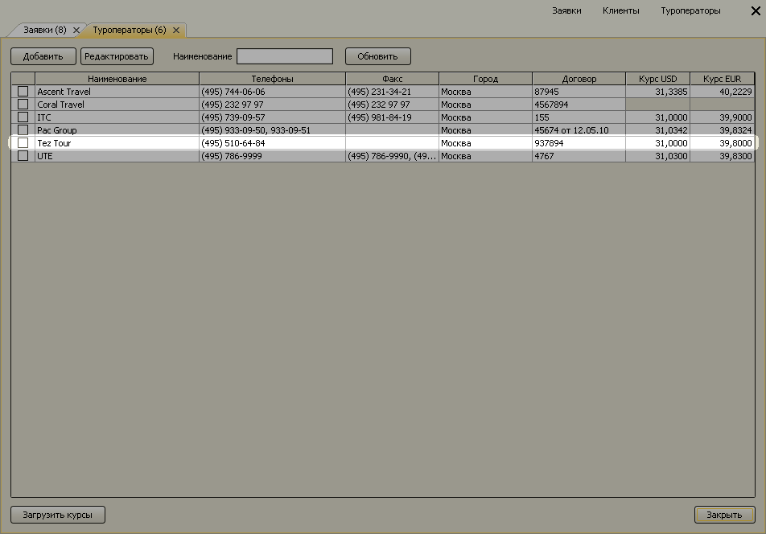

Удаление дубликатов
При работе с программой возникают ситуации, когда один и тот же объект присутствует в справочнике под разными именами. Например, в справочнике "Страны" могут находиться 3 элемента "Доминикана", "Доминиканская Республика" и "Dominicana", соответствующие одной и той же стране. В результате мы не можем получить правильные данные в отчетах по странам, т.к. для системы эти элементы соответствуют разным странам.

Механизм удаления дубликатов позволяет избавиться от лишних элементов-дубликатов. Рассмотрим его работу на следующем примере. Пусть в программе в справочнике туроператоров оказались одновременно заведены 3 элемента с наименованиями "Tez Tour", "Tez" и "Тезтур" для одной и той же компании "Tez Tour". Необходимо, чтобы после удаления дубликатов в справочнике остался лишь элемент "Tez Tour".

Для удаления дубликатов из справочника выберите все 3 элемента (и те, что надо удалить - "Tez" и "Тезтур", и тот, что нужно оставить - "Tez Tour". Нажмите на правую кнопку мыши и выберите в контекстном меню пункт "Удалить дубликаты".

Откроется форма "Удаление дубликатов" с тремя выбранными элементами. Выделите строку с элементом, который останется в базе. Данная строка будет подсвечена зеленым, удаляемые строки - серым. Нажмите кнопку "Удалить дубликаты".

Программа начнет поиск в базе данных всех мест использования удаляемых элементов. Откроется форма "Результаты поиска", где будут структурировано показаны все объекты в базе данных, связанные с удаляемыми элементами. Для запуска механизма удаления дубликатов нажмите кнопку "Выполнить удаление".

Во время удаления дубликатов для всех объектов базы данных, ссылки на удалемые элементы будут заменены ссылками на остающийся объект.

Остались вопросы? Напишите нам на e-mail